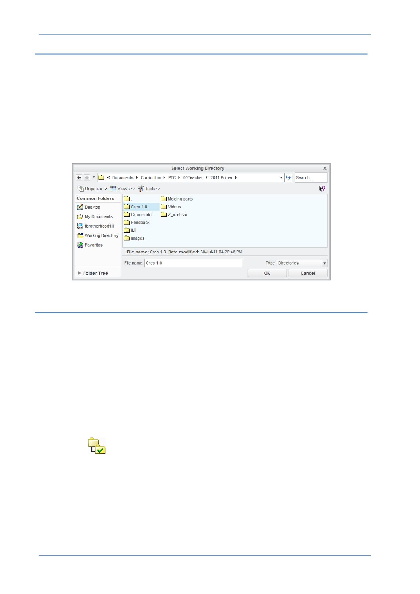

PTC Academic Program
Working directories and saving your work
The Working Directory is the location for opening files from and saving new files to.
Setting your Working Directory:
Creo Parametric is started in a default working directory.
The working directory is set before every session. When you exit Creo, it does not
remember the working directory for the next session.
Open Files - The File Open dialog box looks first in the working directory.
Save Files - Files are saved to the folder they were opened from, this is not always the
working directory.
Working Directory Theory
The working directory is the designated location for opening and saving files. The
default working directory is the “Start in” location defined in the Creo Parametric start
icon properties, typically “My Documents” or your “home” drive or folder on a network.
If you are not using PTC’s Windchill PDMLink to manage your Creo Parametric data, it
is best practice to organize your work by creating a folder for each project. Each time
you start Creo Parametric, you should set the working directory to the folder you plan to
work in. In this course you will be instructed to create a folder and set that as your
working directory.
There are four methods to set your working directory, use the method you are most
comfortable with:
From the Home tab - When Creo Parametric first opens, Click Select Working
Directory
from the Data group of the Home tab. Browse to locate the directory
you wish to use, open it and click OK . This is the easiest and most straight forward
method.
From the File menu – If the Home tab is not available - Click File> Manage
Session> Select Working Directory. Browse to the location that is to be the new
working directory, select it and click OK .
From the Creo Parametric Folder Tree or Browser - Right-click the folder that is to
be the new working directory and select Set Working Directory from the pop-up
menu.
© 2012 PTC
Creo Parametric 2.0 Primer
Page 10